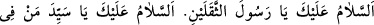
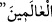

Allâh’ın, meleklerinin, rasullerinin, O’nun arşını taşıyan meleklerinin ve bütün
yarattıklarının salevâtı, Allâh’ın rahmet ve bereketi senin, âilenin ve ashâbının
üzerine olsun.”
Bu salevâta, “salevât-ı feth” denir. Kırk cümledir. Mübarek bir salevâttır; âlimler
tarafından bilinir, meşhurdur. Bu salevâtı okuyanların diledikleri her murad hâsıl olur.
Kim farzları edadan sonra kırk gün sabahları okuyacak olsa, kapalı olan işi açılır,
düşmana karşı muzaffer olur. Hapiste olsa, Hak Teâlâ ona özgürlük bahşeder. Bu
salevâtın özellikleri çoktur. Hz. ârif-i samedânî Emîr Seyyid Ali Hemedânî (k.s.) bu
salevâtın bir kısmını “evrâd-ı fethiyye”nin sonunda zikretmiştir. Bu salevâtı okurken
uyulması gereken husus şudur: Hz. Peygamber (s.a.v.)’i hazır olarak görecek ve
karşısındaymış gibi ona hitap edecek.
“Selâm sana ey Haremeyn’in imâmı. Selâm sana ey doğunun ve batının imamı.
Selâm sana ey insanların ve cinlerin Rasûlü. Selâm sana ey iki cihanda olanların
efendisi ve iki dünyâda olanların şefaatçisi. Selâm sana ey iki kıblenin sahibi. Selâm
sana ey iki doğunun nuru ve iki batının zıyâsı. Selâm sana ey iki torunun, Hasan ve
Hüseyin’in dedesi. Hesap gününe kadar Allâh’ın, meleklerin ve tüm insanların selâmı
sana, senin soyuna, âilene, çocuklarına, torunlarına, eşlerine, topluluklarına,
halîfelerine, nakîblerine (nukabâ), seçkin dostlarına (nücebâ), ashâbına, senin
bölüğünden olanlara, sana tâbi olanlara, taraftarlarına olsun. Hamd âlemlerin
Rabbi olan Allâh’a mahsustur.”
Bu selâma “teslîmât-ı seb‘a” denir. Yedi selâmdır. Kim bir işte çaresiz kalır ve işleri
sarpa sararsa, yedi gün her namazdan sonra on bir kere salevât göndersin ve bu
“teslîmât”ı yedi defa okusun, hâceti yerine gelir.
Ey Allâh’ın Nebîsi, selâm sana,
Kurtuluş ve felâh ancak senin yanındadır.